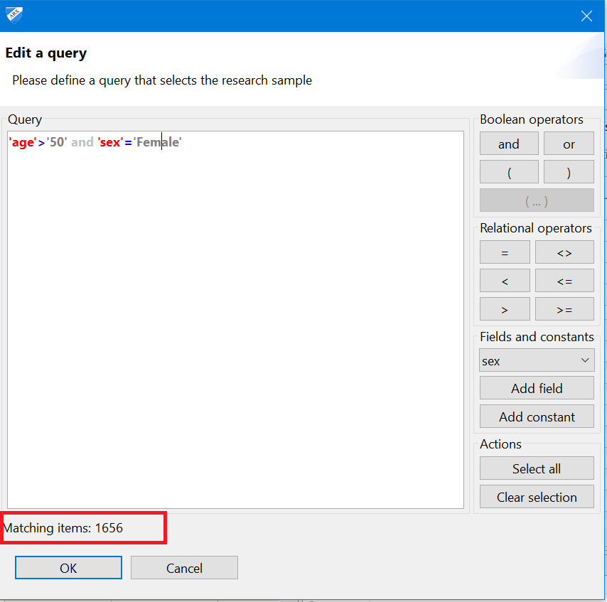

In this view, a research sample can be specified. It represents a sample of the overall dataset that will be anonymized and exported. This feature can be used to anonymize data using a population table. Privacy models that can consider this information include δ-presence, k-map and the game-theoretic approach. It is also considered by some methods for risk analysis. The buttons in the top-right corner provide access to different options for extracting a sample from the dataset:
The view will show the size of the current sample and the method with which it was created. At any time, the research sample can be altered by clicking the checkboxes shown in the data tables. The query syntax is as follows: fields and constants must be enclosed in single quotes. In the example 'age' is a field and '50' is a constant. The following operators are supported: >, >=, <, <=, =, or, and, ( and ). The dialog dynamically shows the number of rows matching the query and displays error messages in case of syntactic errors.
